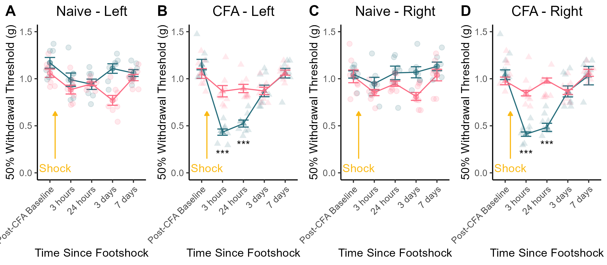

Supplemental Figure 4 - Sex Differences in Shock-Induced Sensitivity
Published Image

Figure S4. Sex differences in footshock-induced expression of hyperalgesic priming. (A) There was no sex difference in the magnitude of footshock-induced mechanical sensitivity among nive mice. (B) CFA-primed mice males exhibited expression of hyperalgesic priming at the site of previous injury whereas female CFA-primed mice did not. (C) Naive mice did not express footshock induced changes in sensitivity, but (D) male CFA-primed mice exhibited expression of hyperalgesic priming after footshock in their right paw as well (which had not been injured by CFA). Data expressed as mean value +/- SEM, *** indicates p < 0.001.
Statistics
## CFA-primed: Left Paws
a <- Left_data %>%
melt(id.vars = c("ID","Sex","CFA")) %>%
filter(CFA == "CFA")
b <- aov(data=a,value~variable*Sex)
summary(b)## Df Sum Sq Mean Sq F value Pr(>F)
## variable 4 2.6377 0.6594 36.44 < 0.0000000000000002 ***
## Sex 1 0.4122 0.4122 22.78 0.0000096220 ***
## variable:Sex 4 0.9339 0.2335 12.90 0.0000000637 ***
## Residuals 70 1.2666 0.0181
## ---
## Signif. codes: 0 '***' 0.001 '**' 0.01 '*' 0.05 '.' 0.1 ' ' 1c <- a %>%
group_by(variable) %>%
pairwise_t_test(value~Sex)
tt(c)| variable | .y. | group1 | group2 | n1 | n2 | p | p.signif | p.adj | p.adj.signif |
|---|---|---|---|---|---|---|---|---|---|
| Post-CFA Baseline | value | Male | Female | 8 | 8 | 0.2360000 | ns | 0.2360000 | ns |
| 3 hours | value | Male | Female | 8 | 8 | 0.0000190 | **** | 0.0000190 | **** |
| 24 hours | value | Male | Female | 8 | 8 | 0.0000155 | **** | 0.0000155 | **** |
| 3 days | value | Male | Female | 8 | 8 | 0.9980000 | ns | 0.9980000 | ns |
| 7 days | value | Male | Female | 8 | 8 | 0.9330000 | ns | 0.9330000 | ns |
Both Three and 24 hours after footshock, CFA-primed males exhibit more hypersensitvity than CFA-primed females.
There are no group differences at baseline, 3 days post shock, or 7 days post shock.
## CFA-primed: Right Paws
a <- Right_data %>%
melt(id.vars = c("ID","Sex","CFA")) %>%
filter(CFA == "CFA")
b <- aov(data=a,value~variable*Sex)
summary(b)## Df Sum Sq Mean Sq F value Pr(>F)
## variable 4 2.0363 0.5091 27.21 0.000000000000123 ***
## Sex 1 0.6361 0.6361 34.00 0.000000155168408 ***
## variable:Sex 4 1.1357 0.2839 15.18 0.000000005554703 ***
## Residuals 70 1.3095 0.0187
## ---
## Signif. codes: 0 '***' 0.001 '**' 0.01 '*' 0.05 '.' 0.1 ' ' 1c <- a %>%
group_by(variable) %>%
pairwise_t_test(value~Sex)
tt(c)| variable | .y. | group1 | group2 | n1 | n2 | p | p.signif | p.adj | p.adj.signif |
|---|---|---|---|---|---|---|---|---|---|
| Post-CFA Baseline | value | Male | Female | 8 | 8 | 0.3350000000 | ns | 0.3350000000 | ns |
| 3 hours | value | Male | Female | 8 | 8 | 0.0000000132 | **** | 0.0000000132 | **** |
| 24 hours | value | Male | Female | 8 | 8 | 0.0000001120 | **** | 0.0000001120 | **** |
| 3 days | value | Male | Female | 8 | 8 | 0.9250000000 | ns | 0.9250000000 | ns |
| 7 days | value | Male | Female | 8 | 8 | 0.7800000000 | ns | 0.7800000000 | ns |
Both Three and 24 hours after footshock, CFA-primed males exhibit more hypersensitvity than CFA-primed females.
There are no group differences at baseline, 3 days post shock, or 7 days post shock.
Similar statistical results for the left and right hind paws indicate that the expression of hyperalgesic priming is not limited to the site of previous injury in male mice.